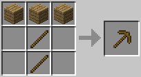
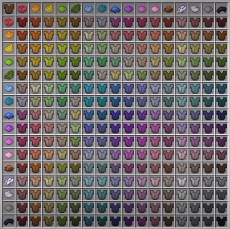

В Minecraft многие предметы создаются из ингредиентов, которые нужно расположить в строгом порядке в специальном окне. Такое окно есть в инвентаре игрока, где можно делать только простые предметы в сетке 2x2, и на верстаке, где можно делать сложные предметы в сетке 3x3. На верстаке можно делать доспехи, оружие и инструменты. Топоры, кирки, лопаты и мотыги нужны для того, чтобы можно было добывать древесину, полезные ископаемые и камни, копать землю и возделывать грядки. Сделанные из различных материалов, такие предметы будут различаться между собой количеством наносимого урона, прочностью и другими характеристиками. 
Железные инструменты выполняют ту работу, для которой предназначены, быстрее инструментов из камня или древесины, и могут прослужить игроку больше времени прежде чем сломаются. В игре есть другие функциональные блоки, например, печь для выплавки металлов или варочная стойка для приготовления зелий. Получившиеся зелья в зависимости от использованных ингредиентов обладают разными эффектами: они могут восстанавливать очки здоровья, увеличивать силу, отравлять и многое другое. Игрок может ускорить перемещение персонажа, если сделает рельсы и поставит на них вагонетку.
В Minecraft есть не только обычные рельсы, но и рельсы других типов: энергорельсы, ускоряющие вагонетку за счёт питания редстоуна; активирующие рельсы, которые нужны для того, чтобы активировать определённую вагонетку; рельсы с датчиком, подающие сигнал редстоуна, если по ним проедет вагонетка. Также рельсы можно найти в заброшенных шахтах и лесных особняках. С помощью энергорельсов персонаж может достичь максимальной скорости — 8 блоков в секунду.
В компьютерной версии все очень просто: берем кожаную броню, берем желаемый краситель, кладем их в инвентарь и готово. В карманной версии немного потруднее. Сперва нам понадобится котел, в который нужно будет налить воду. Потом берем любой краситель и нажимаем на котел с водой. Вода станет того же цвета, что и краситель. Кстати, если вы играете в выживании, то не обязательно тратить 7 железных слитков на крафт котла. Его можно отыскать в хижинах ведьм и иногда в новых деревнях. А теперь продолжим. Берем любой элемент кожаной одежды, кликаем по котлу с красителем. Готово! Однако с каждой покраской количество красителя в котле уменьшается. Но полного котла с красителем вполне хватит для покраски одной брони. Убрать эти оставшиеся коричневые штуки просто так нельзя,но в интернете есть моды, позволяющие это сделать. Таким же образом можно покрасить конскую кожаную броню. Но стойте, это еще не все! Краске можно придать новые оттенки. Для этого в котел с окрашенной водой добавьте любой другой краситель. Вода приобретет другой оттенок.